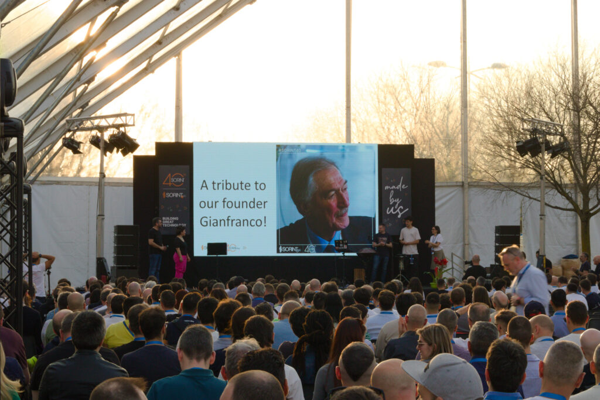

When the roadmap is set but the internal team is thin, Sorint.US can accelerate delivery with embedded platform engineers, technical leaders, and focused project squads. This is not staffing for its own sake. It is targeted platform execution support.

The strategy exists. The budget exists. The blocker is execution capacity. Internal teams are spread across cloud operations, delivery demands, incidents, and roadmap pressure. The result is predictable: platform work stays important but not urgent enough to move fast.
Sorint helps close that gap with engineers who can plug into platform delivery quickly and work under an existing architecture direction, or help stabilize the direction if the program still needs senior hands on it.
Engineers for Kubernetes, Terraform, cloud foundations, platform automation, and resource abstraction layers.
Support for production resilience, alerting, SLO design, incident process, and operational hardening as the platform scales.
Platform security support for policy, secrets, access models, compliance controls, and regulated delivery environments.
Portal, self-service, internal tooling, and adoption support so developers actually use the platform you are building.
Senior architects, platform leads, or program guidance when the internal team needs sharper decisions and stronger coordination.
Small, focused delivery teams for bounded scopes like CI/CD modernization, platform migration, portal rollout, or automation programs.
Add one or more senior platform engineers directly into your existing workflow when the team needs immediate execution help.
Use a Sorint-led project team when the scope is clear and the organization wants faster delivery with less management overhead.
Combine architecture oversight with embedded engineers so the platform moves faster without losing coherence.
The platform direction is mostly clear, but internal bandwidth is too thin to move the work at the required pace.
The team lacks specific platform depth in reliability, security, cloud foundations, DevEx, or technical leadership.
The organization has important platform workstreams but cannot free enough internal focus to execute them well.
Acceleration can later evolve into managed services or longer embedded support if the platform requires it.
Sorint is credible here because the platform talent sits inside a broader engineering company that already delivers automation, cloud transformation, reliability, and managed operations. You are not buying abstract staffing. You are buying relevant platform capability.

Platform engineers are evaluated through engineering context, not generic keyword matching or recruiter theater.
Use U.S. and European engineering talent in the mix that best fits stakeholder needs, time-zone overlap, and cost constraints.
Acceleration can remain targeted, grow into a larger delivery pod, or transition into managed services as the platform matures.
“Gold medal. SORINT could not do better, perfect! Every promise and every deadline was met!”

“The governance factor ensured the project is delivered within budget, while maintaining flexibility to adapt our evolving needs.”

“Synergy, timely management of reports, and consistent response time to operational needs stood out for us!”

We can review the current roadmap, identify the missing capabilities, and suggest the embedded or squad model that fits without bloating the team.
Talk through the platform backlog, team shape, and where external help would create real execution leverage.
Book the ReviewIf the operating model still needs work before adding engineers, begin with the consulting page and tighten the platform plan first.
View Platform Consulting